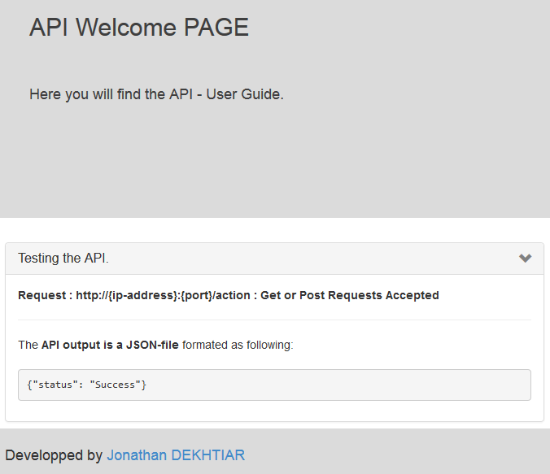

Rapid API Prototyping with Bottle.py
Python Tutorial: How to launch rapidly a REST API with Bottle.py
Prerequisites
All the sourcefiles used for this tutorial are available here: download link
Feel free to share and spread the word if you liked the article
A. Python and PIP installation:
First of all, if you don't have Python or PIP installed. You will need to install beforehand.
B. Bottle: Python Web Framework
Then let's install Bottlepy.org which is the library we will use to design our REST API:
pip install --upgrade pip
pip install bottle
You will also need to install Paste which is a multi-threaded webserver:
pip install paste
C. API Testing Tool
In order to test the API, we will need a tool able to launch GET/POST/PUT requests.
If you don't have any tool able to perform such operations, you can install "PostMan" which runs on Google Chrome: https://www.getpostman.com/
D. API launching
To launch the API, just execute this simple command in the project directory:
python server.py
Let's build our first API !
1. Configure your API settings
As I am use to running many API at the same time, I have the habit to create a config file that I write in the XML format. It's easy to read, easy to format, easy to parse in most languages.
I think it is a good practice, so here is how it works.
What are the settings we need for our API ?
- API Port: On which port runs the API.
- Local API: A boolean to set the API local to the computer or public.
- IP address: Used especially if you run APIs on different servers, for now just let the value "127.0.0.1"
- API Name: Used to identify which settings the API needs to retrieve.
File: conf.xml
<!-- ################################# Config File ################################ -->
<config>
<APIserver serverName="serverAPI" local="false" ip="127.0.0.1" port="8080"/>
</config>
Now that we have our configuration file written, how to read it with Python ?
I have written a small function to perform this task. It returns a dictionary with the name of the servers as key
File: loadConf.py
################################# Import Libraries ################################
import os.path
import xml.etree.ElementTree as XML
def loadAPIConf(confPath = 'conf.xml'):
configurations = XML.parse(confPath).getroot()
servers = dict()
for serv in configurations.iter('APIserver'):
serverName = serv.attrib['serverName']
serverPort = serv.attrib['port']
serverIP = serv.attrib['ip']
serverLocal = serv.attrib['local']
servers[serverName] = {'ip':serverIP, 'port':serverPort, 'local':str2bool(serverLocal)}
return servers
def str2bool(v):
return v.lower() == "true"
2. Create the API launcher
Before taking care of the API itself, let's build up the API launcher. Of course, it won't work until the file api.py isn't fully working.
The goal of this file is to load the configurations from conf.xml using the file just created: loadConf.py.
Once the settings are loaded, we instanciate an API declared in the file api.py (not created yet), and launch the API with the right settings.
File: server.py
################################# Import Libraries ##########################################
import os.path import sys
from loadConf import loadAPIConf #We load the function created in the file : loadConf.py
import api #Don't worry about this line yet
#############################################################################################
configAPI = loadAPIConf() #We launch the function created in the file : loadConf.py
#For usability purpose, we create an easier-to-use variable containing the API settings.
serverAPI = {'port':configAPI['serverAPI']['port'], 'local':configAPI['serverAPI']['local']}
#We instanciate the api object declared in the file api.py
api = api.API(serverAPI['port'], serverAPI['local'])
#we launch the api, and that's it !
api.start()
3. Let's design the API !
So let's start with a minimalistic file, the strict minimum to start with !
We will create the API class, and take as input the API's settings. We will use them to launch an API with the desired settings.
File: api.py
################################# Import Libraries ################################
import os.path
from bottle import route, run, response, static_file, request, error, Bottle, template
from json import dumps, loads, load
#################################### WebService Route / #####################################
class API:
def __init__(self, port, local):
self._app = Bottle()
self._local = local
self._port = port
if local:
self._host = '127.0.0.1'
else:
self._host = '0.0.0.0'
def start(self):
self._app.run(server='paste', host=self._host, port=self._port)
Now, you can launch the API ! It works ! Click Here if you don't remember how to launch the API.
Try going to http://localhost:8080/, only if you develop locally and didn't changed the API Port
=> If you see a 404 Error ! Bingo, it's working bro !
4. Why do I see a 404 Error ? Help ! I need somebody ...
We create an API that just do nothing. No action is supposed to be perform, so whenever you ask anything, the API answers you back a 404 Error.
5. Serving a landing page with my API
Even if it's pretty weird to want a useful API and not just something running for the fun, I'll try to help you out with this goal.
We will need to register some actions that the API will perform when it receives a request.
First of, let's create a folder named "html" at the project root folder.
Once it is done, create the file index.html inside the folder html. It will be used as our API home page, it can host the documentation for example.
File: index.html
<html lang="en">
<head>
<meta charset="utf-8">
<meta name="viewport" content="width=device-width, initial-scale=1.0">
<meta name="description" content="">
<meta name="author" content="">
<title>
</title>
<link href="https://netdna.bootstrapcdn.com/bootstrap/3.0.0/css/bootstrap.min.css" rel="stylesheet">
<style class="custom-css">
#wrap {
min-height: 100%;
height: auto;
/* Negative indent footer by its height */
margin: 0 auto -60px;
/* Pad bottom by footer height */
padding: 0 0 60px;
}
#footer {
font-size: 18px;
bottom: 0;
padding-top: 20px;
height: 60px;
position: fixed;
width: 100%;
background-color: #DBDBDB;
}
#jumbo {
background-color: #DBDBDB;
color: #3F3F3F;
min-height: 290px;
padding-top: 20px;
padding-bottom: 20px;
}
#jumbo p {
font-size: 18px;
}
#jumbo h1 {
font-size: 25px;
}
@media (min-width: 650px){
#jumbo h1 {
font-size: 30px;
}
}
@media (min-width: 740px){
#jumbo h1 {
font-size: 35px;
}
}
@media (min-width: 1024px){
#jumbo h1 {
font-size: 50px;
}
}
@media (min-width: 1220px){
#jumbo h1 {
font-size: 60px;
}
}
.panel-heading a:after {
font-family:'Glyphicons Halflings';
content:"\e114";
float: right;
color: grey;
}
.panel-heading a.collapsed:after {
content:"\e080";
}
.container a{
text-decoration: None;
}
</style>
</head>
<body>
<!-- Wrap all page content here -->
<div id="wrap">
<div id="jumbo" class="jumbotron">
<div class="container">
<h1>
API Welcome PAGE
</h1>
<br>
<p>
Here you will find the API - User Guide.
</p>
</div>
</div>
<!--main-->
<div class="container">
<div class="panel-group" id="accordion">
<div class="panel panel-default" id="panel1">
<div class="panel-heading">
<h4 class="panel-title">
<a data-toggle="collapse" data-target="#collapseOne" href="#">Testing the API.</a>
</h4>
</div>
<div id="collapseOne" class="panel-collapse collapse in">
<div class="panel-body">
<b>Request : http://{ip-address}:{port}/action : Get or Post Requests Accepted</b></br>
<hr>
The <b>API output is a JSON-file</b> formated as following:<br><br>
<div>
<pre id="json">{"status": "Success"}</pre>
</div>
</div>
</div>
</div>
</div>
</div><!--/container-->
</div><!-- Wrap Div end -->
<div id="footer">
<div class="container">
<p class="muted credit">Developped by <a href="http://www.jonathandekhtiar.eu">Jonathan DEKHTIAR</a></p>
</div>
</div>
<script src="https://ajax.googleapis.com/ajax/libs/jquery/1.10.2/jquery.min.js"></script>
<script src="https://netdna.bootstrapcdn.com/bootstrap/3.0.0/js/bootstrap.min.js"></script>
<script>
var jsonStr = $("#json").text();
var jsonObj = JSON.parse(jsonStr);
var jsonPretty = JSON.stringify(jsonObj, null, '\t');
$("#json").text(jsonPretty);
</script>
</body>
</html>
Once you have created the file, let's redesign the API to serve this static html.
File: api.py
################################# Import Libraries ###################################################
import os.path
from bottle import route, run, response, static_file, request, error, Bottle, template
from json import dumps, loads, load
#################################### WebService Route / ##############################################
class API:
def __init__(self, port, local):
self._app = Bottle()
self._route() # During initialisation we launch the _route() method to register the routes enabled
self._local = local
self._port = port
if local:
self._host = '127.0.0.1'
else:
self._host = '0.0.0.0'
def start(self):
self._app.run(server='paste', host=self._host, port=self._port)
def _route(self):
self._app.hook('before_request')(self._strip_path) # Needed to prevent errors.
self._app.route('/', callback=self._homepage) # We tell to the API to listen on "/" and execute the action "_homepage()" when "/" is called
def _strip_path(self):
request.environ['PATH_INFO'] = request.environ['PATH_INFO'].rstrip('/')
def _homepage(self):
return static_file("index.html", root=os.getcwd()+'\\html') # We return the "index.html" file as a static file.
Now, you can launch the API and you will see our "index.html ! Click Here if you don't remember how to launch the API.
Try going to http://localhost:8080/, only if you develop locally and didn't changed the API Port.

6. Let's perform some real business with my API !
Let's change once again the file api.py
File: api.py
################################# Import Libraries ###################################################
import os.path
from bottle import route, run, response, static_file, request, error, Bottle, template
from json import dumps, loads, load
#################################### WebService Route / ##############################################
class API:
def __init__(self, port, local):
self._app = Bottle()
self._route() # During initialisation we launch the _route() method to register the routes enabled
self._local = local
self._port = port
if local:
self._host = '127.0.0.1'
else:
self._host = '0.0.0.0'
def start(self):
self._app.run(server='paste', host=self._host, port=self._port)
def _route(self):
self._app.hook('before_request')(self._strip_path) # Needed to prevent errors.
self._app.route('/', callback=self._homepage) # We tell to the API to listen on "/" and execute the action "_homepage()" when "/" is called
# We tell the API to execute _doAction() when a POST Request is perform on "/action"
self._app.route('/action', method="POST", callback=self._doAction)
# We tell the API to execute _doAction() when a GET Request is perform on "/action"
self._app.route('/action', method="GET", callback=self._doAction)
def _strip_path(self):
request.environ['PATH_INFO'] = request.environ['PATH_INFO'].rstrip('/')
def _homepage(self):
return static_file("index.html", root=os.getcwd()+'\\html') # We return the "index.html" file as a static file.
def _doAction(self):
rv = {"status": "Success"} # We create a dictionary with the key "status" = "success"
response.content_type = 'application/json' # we set the correct "response.content_type" to "json" format, because "json" is nice and cool !
return dumps(rv) # We dump the dictionary into json file and return it.
Now, you can launch again the API! Click Here if you don't remember how to launch it.
Try going to http://localhost:8080/action, only if you develop locally and didn't changed the API Port.
You should now see some json:
{"status": "Success"}
7. Conclusion
Now you can declare new actions, and perform complex process outside or inside the API.
Have a look to the documentation if you have any question : Bottlepy.org
Please share the article if you liked it !